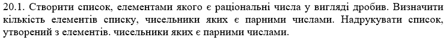
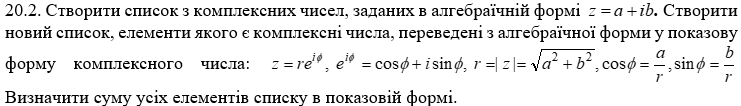
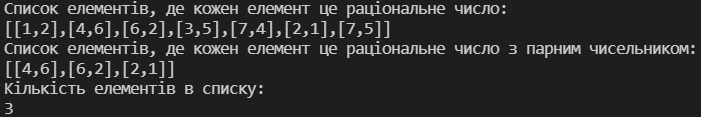
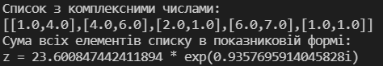
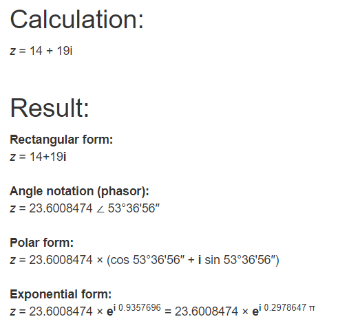

Лабораторна робота 5.
Обробка раціональних та комплексних чисел мовами функціонального програмування.
Варіант 20
Автор
| ПІБ: | Семечненко Тарас Олександрович |
| Курс: | 4 |
| Група: | ІПЗ-42 |
| Рік навчання: | 2021-2022 |
Зміст
Мета
Умова задачі
Структура програми
Обгрунтування вибору середовища та мови програмування
Код програми
Скрін-шоти
Аналіз достовірності результатів
Висновки
Мета
Опанувати технологію абстракції даних в мовах функціонального програмування. Реалізувати програму обробки раціональних та комплексних чисел мовами функціонального програмування, представивши ці числа конструкціями типу «пара».
Умова задачі
Задача 1
Задача 2
Структура програми
Схема задачі 1

Схема задачі 2

Обгрунтування вибору середовища та мови програмування
Середовище програмування: VS Code
Середовище обране через:1) Це моє основне середовище в якому програмую, і його можна використовувати майже для будь-якої мови програмування.
2) Має всі необхідні функції для програмування і працює набагато швидше в порівнянні з іншими IDE.
Мова функціонального програмування: Haskell
Мова обрана через:1) Це одна з самих популярних та нових функціональних мов програмування.
2) Дуже багата документація.
3) Мова має дуже приємний та простий синтаксис.
Код програми:
Завдання 1:
Завдання 2:
Посилання на код 1 завдання
Посилання на код 2 завдання
Скрін-шоти:
Результат виконання 1 програми:
Результат виконання 2 програми:
Аналіз достовірності результатів
В першому завданні нам дано масив з рацінальних чисел: 1/2, 4/6, 6/2, 3/5, 7/4, 2/1, 7/5
З яких наступні мають парні чисельники: 4/6, 6/2, 2/1
В другому завданні в нас перелік комплексних чисел: 1 + 4i, 4 + 6i, 2 + 1i, 6 + 7i, 1 + 1i
Сума цих чисел в алгебраїчній формі буде: 14 + 19i
Переведення з алгебраїчної в показникову форму завдяки онлайн калькулятору:

Висновки
В л.р. було виконано 2 завдання за допомогою мови Haskell.
В першому завданні була реалізована функція, яка знаходила раціональні числа з парними чисельниками, раціональні числа зберігались у вигляді списку з двох елементів.
В другому завданні була реалізована фукнція, що приймає комплексне число в алгебраїчній формі та перетворює його в показникову. І для того, щоб перевести значення в показникову форму, необхідно спочатку знайти радіус та кут fi.